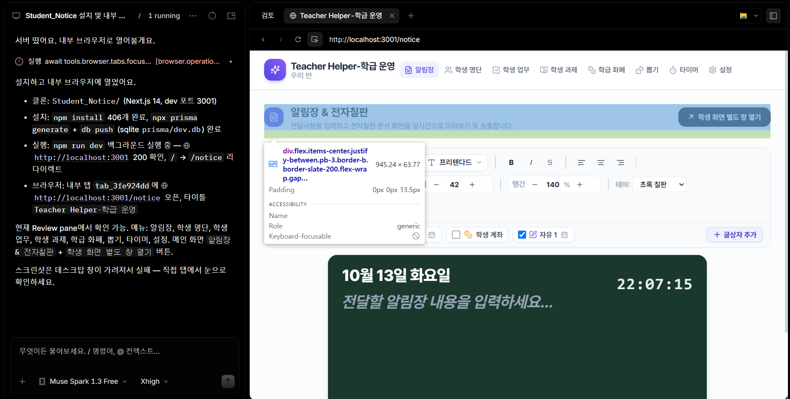

AI로 바이브코딩하기 — 내 맞춤형 프로그램 만들기
AI와 대화하며 웹앱을 만들고, 화면에서 고칠 부분을 짚어가며 완성한 뒤 GitHub에 배포합니다.
새 프로그램 만들기
만들기 시작
AI 앱에 웹앱을 만들고, Git으로 코드를 관리한 뒤 GitHub에 배포하겠다고 말합니다. AI가 웹앱을 만드는 데 필요한 내용을 질문하면 차례로 답합니다.
Git은 코드를 고칠 때마다 변경 내용을 기록해 두는 도구입니다. 실수해도 이전 상태로 돌아갈 수 있습니다.
GitHub는 Git으로 기록한 코드를 인터넷에 올려 보관하고 공유하는 곳입니다. GitHub Pages를 이용하면 만든 웹앱에 접속할 주소도 만들 수 있습니다.
AI에 이렇게 요청해 보세요
웹앱을 만들 거야. Git으로 코드를 관리하고 GitHub에 배포할 거야. 필요한 내용은 질문해줘.

화면을 보며 피드백하기
AI 앱의 내부 브라우저 상단에서 요소 선택 버튼을 먼저 클릭합니다. 그다음 피드백할 부분을 클릭하고, 수정할 점을 알려줍니다.

완성 후 배포 요청하기
웹앱이 완성되면 AI에 배포를 요청하고, 내가 꼭 해야 하는 부분만 안내받습니다.
AI에 이렇게 요청해 보세요
완성한 웹앱을 배포해줘. 꼭 내가 해야하는 부분만 안내해줘.
기존 프로그램에서 이어 만들기
만들기 시작
AI 앱에 기존 프로그램의 폴더 위치나 GitHub 주소를 알려주고, Git으로 코드 변경을 기록하며 이어서 작업해 달라고 합니다. AI가 현재 프로그램과 바꾸고 싶은 점을 질문하면 차례로 답합니다.
이어 만들기 실습용 GitHub 주소
- 간성초등학교 AI 연수 자료(모션 그래픽)
- https://github.com/scftsnow/ganseong-ai-training
AI에 이렇게 요청해 보세요
(주소 붙여넣기) 이 프로그램에서 이어서 작업해줘. Git으로 코드를 관리하고 GitHub에 배포할 거야. 필요한 내용은 질문해줘.
화면을 보며 피드백하기
AI 앱의 내부 브라우저 상단에서 요소 선택 버튼을 먼저 클릭합니다. 그다음 피드백할 부분을 클릭하고, 수정할 점을 알려줍니다.
완성 후 배포 요청하기
웹앱이 완성되면 AI에 배포를 요청하고, 내가 꼭 해야 하는 부분만 안내받습니다.
AI에 이렇게 요청해 보세요
완성한 웹앱을 배포해줘. 꼭 내가 해야하는 부분만 안내해줘.